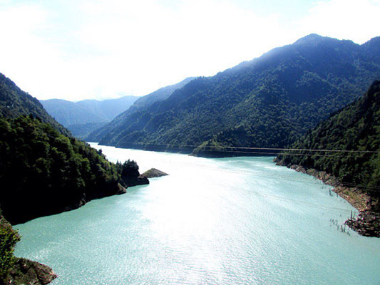
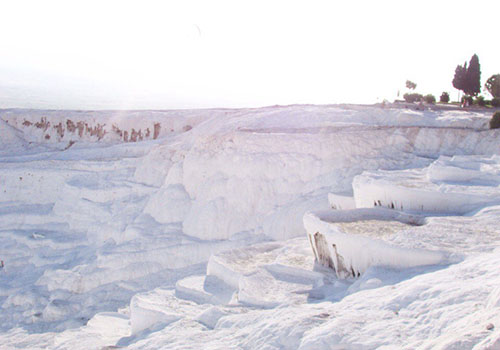

Ребята из Киева, путешествующие автостопом. Они исколесили всю Россию, Грузию, Армению, Азербайджан, Турцию, полетели лоукостом в Киргизию, месяц катались по Средней Азии, а сейчас находятся в Индии. Однако останавливаться на этом списке стран молодые люди не собираются.
Вы были обычными студентами, но бросили дом и учебу ради путешествия в Индию. Как вы решились на такой ответственный шаг?
Да, мы были студентами, но нашли возможность работать в Китае учителями английского. В результате и Китай объехали, и заработали немножко, и в процессе поняли, что нам интересно на самом деле. Я закончила курс бакалавра международного права в КИМО (Киевский институт международных отношений Национального университета им. Т. Шевченко), Паша учился на втором курсе отделения международной информации. Но после одного года вне дома мы уже не хотим возвращаться к студенческой скамье, намного интереснее неформальное образование, свой бизнес и свои проекты.
Легко ли найти человека, который подвезет бесплатно? Как вы ищете водителей?
Мы уверены, что автостопить можно в любой стране мира, где есть дороги. Если есть дорога, значит, кто-то по ней едет, и какая-то машина точно подвезет бесплатно. Главное — правильно выбрать позицию, аккуратно одеться (очень помогают яркие одинаковые футболки со смешными надписями), быть вежливым, в хорошем настроении и, конечно же, с рюкзаком — это как визитка для водителей, что вы не халявщик, а путешественник. Люди всегда готовы помочь, просто в одной стране остановится первая же машина, как в Турции, например, а в другой нужно подождать 20 минут, как случалось иногда в Киргизии.
Расскажите о самых смешных историях с водителями.
Скорее, это истории не с водителями, а с их транспортными средствами — например, когда мы выезжали из Сванетии в Грузии (это горный регион, где всего одна дорога и мало машин), мы сменили кабриолет на открытый кузов грузовика, где было отлично видно горы, потом на полкабины дальнобойщика с соседями — пятью другими автостопщиками. Далее была машина с «золотой грузинской молодежью», в которой мы ехали вшестером. До Кутаиси нас подбросил обычный водитель, а в сторону Батуми мы застопили полицейский патруль! И потом грузинский милиционер еще полчаса искал нашу деревню и нужную улицу, хотя ему было совсем в другую сторону. Наверное, 70–80% людей, которые нас подвозили, обязательно чем-то угощали — будь то яблоко, мороженое, обед или даже ночлег в их доме. Деньги нам тоже дарили, хотя мы очень настойчиво отказывались, объясняя, что на еду нам точно хватает.
Ваша самая длительная автостопная поездка с одним водителем?
Самая длинная поездка — это из Казармана в Узген в Киргизии (7 часов в кабине КамАЗа). Казарман — вообще удивительный городок, зажатый между двумя сложнейшими снежными горными перевалами высотой 3000 и 3500 метров. Там нет асфальта, дорога земляная, безумный серпантин идет по самому краю обрыва. Проезд открыт только несколько месяцев в году, и ехать там могут только три машины в день, и две из них — такси. Если бы мы знали, какой автостоп нас ждет, то точно бы объехали стороной. Но такие пейзажи и экстрим того стоят!
Автостоп — рисковое занятие. Не боялись, что водитель увезет «не туда»?
На самом деле рискует не только автостопщик, но и водитель, который приглашает к себе в машину незнакомых людей. Кроме того, плохие люди бесплатно не подвозят. А чтобы не потеряться, есть очень классное бесплатное приложение для телефонов с навигатором офлайн — maps.me, всегда знаешь, куда едешь.
В своем блоге вы писали, что были депортированы из Узбекистана в Таджикистан. Как и почему это произошло?
В Узбекистане обязательна регистрация в течение 72 часов. Но, к сожалению, об этом вообще не предупреждают на границе, как делают в Таджикистане, Азербайджане и Казахстане. Так как в Узбекистане совсем нет интернета и мы жили в маленьких городках у друзей или вообще в деревне, конечно же, о регистрации вовремя не узнали. А когда нам объяснили ситуацию в хостеле и посоветовали обратиться в ближайшее отделение милиции, чиновники поставили перед выбором — либо депортация, либо штраф в несколько тысяч долларов с каждого. Хотя на самом деле закон мы не нарушали, так как 72 часа в каждом городе можно находиться без регистрации, но в Узбекистане госслужащие либо не знают своих законов, либо не желают знать. Вообще Узбекистан — страна с нереально открытыми и гостеприимными людьми, но их государство — это островок тоталитаризма, который остался после Советского Союза. Депортировали нас после четырех дней возни с документами и нескольких ссор (нам обещали Таджикистан, а хотели отправить в Казахстан, потому что ближе) милиционеры просто повезли к границе на своей машине, там поставили два штампа — один обычный и второй о выдворении, проверили ноутбук, посмотрели наши фотографии (у них это обязательная процедура, а вот предупредить о регистрации — не обязательная) и просто отпустили к границе с Таджикистаном. Никакие ценности и деньги у нас не отбирали, просто обычный выезд. Но пограничник не говорил ни на английском, ни на русском и даже не смог ответить на переведенный вопрос, на сколько лет нам ограничили въезд.
Почему вы выбрали именно такой маршрут путешествия с конечной точкой в Индии?
На самом деле мы планировали ехать в Европу, но делать долгосрочную визу было очень долго, несколько месяцев, поэтому решили пока поехать по безвизовым для нас странам. А что касается визы в Индию, делается она очень легко — полчаса в интернете и по $60 с человека. Но это не конечная точка, у нас нет обратных билетов, будем в пути еще минимум месяца три. 
Самое полезное и интересное знакомство за время вашего путешествия?
Наверное, японец, который успел побывать за несколько лет в самых труднодоступных уголках планеты (например, в маленьком Бутане или в том же Таджикистане, куда ему непросто получить визу, а английский в стране почти никто не знает), и которому, на минуточку, 76 лет! И этот человек путешествует один, без знания местных языков и привычек, со средним английским, к тому же — японец, а все наслышаны, какая это закрытая нация! На самом деле мы встретили невероятное количество добрых, чудесных, вдохновляющих людей, но для себя выделили именно этого японца — нам самим в 20 с хвостиком тяжело, жарко, пыльно, а как человеку в 76 лет бывать в родной стране раз в году?
В вашей группе в VK указано, что ваш бюджет — $7 в день на все. Как вы распределяете свои расходы?
Да, у нас правда бюджет $7 — хватает только на еду и разве что на маршрутку. Путешествия на такие деньги возможны только благодаря неиссякаемой доброте людей, которых мы встречаем, — с нами делятся едой, ночлегом, горячей и холодной водой, советами и отличным настроением. Правда, мы отложили несколько сотен долларов отдельно на визы, одежду, достопримечательности и экстренные расходы, но чувствуем, что скоро будем подрабатывать — в Индии очень тяжело удержаться и не потратить больше на вкуснейшую еду, свежие фреши и незабываемые храмы и мечети.
Как вы договаривались подвезти вас с людьми, не знающими английский и русский языки?
Нам пока очень везло — мы ехали по восьми русскоязычным странам, а в Индии все знают английский. Правда, в Турции котируется либо турецкий (мы уже знаем 30 слов), либо немецкий — Паша вспомнил свои школьные уроки. А объясниться всегда можно — жесты, таблички, переводчик. Главное, уметь говорить: «Без денег подвезете?»
Скучаете ли вы по дому? Бывают моменты, когда хочется все бросить и вернуться к обычной жизни?
Мы скучаем не по дому, а скорее, по оседлому образу жизни — когда знаешь, где будешь ночевать, что есть, когда есть интернет. Также очень не хватает возможности реализовать свои творческие и бизнес-идеи — их приходится откладывать на потом, записывая в блокнотик и в карту желаний. Еще, если долго живешь в одной стране, начинаешь скучать по родной кухне, но нас это ждет, скорее всего, в Китае.
5 советов начинающему автостопщику?
- 1. Просто выйти на трассу. Хотя бы в пределах родного города, своей страны, самого простого маршрута. Первый раз — самый страшный, но добрые люди есть везде.
- 2. Делать по возможности таблички — так уедете быстрее. Мы писали первую «В сторону + название города», а вторую «Пожалуйста», только на местном языке. Но где хороший автостоп, таблички не нужны.
- 3. Брать по возможности с собой палатку, спальники, надувные коврики, даже горелка с котелком не помешает — так вы будете абсолютно автономны, сможете сэкономить, остановиться в очень красивом месте и не бояться, что уже ночь, а спать негде.
- 4. Когда палатка не помогает (например, если очень холодно), подходите к местным и спрашивайте, где можно переночевать, объясняя ситуацию. Очень много людей, больше половины, точно пригласят к себе! Мы так делали несколько раз в Киргизии, когда ночью был почти минус, а отели попадались либо некачественные и очень дорогие, либо их вообще не было.
- 5. Учить языки. Мы были очень удивлены, когда нам помог и родной русский, и хороший английский, и средние французский, испанский и португальский, совсем плохой немецкий и 50 слов на китайском — все эти языки мы использовали за три месяца в пути, хотя некоторые, как мы думали, давно уже позабыли. Чем больше знаешь языков, тем ярче, проще и приятнее будет любая поездка.